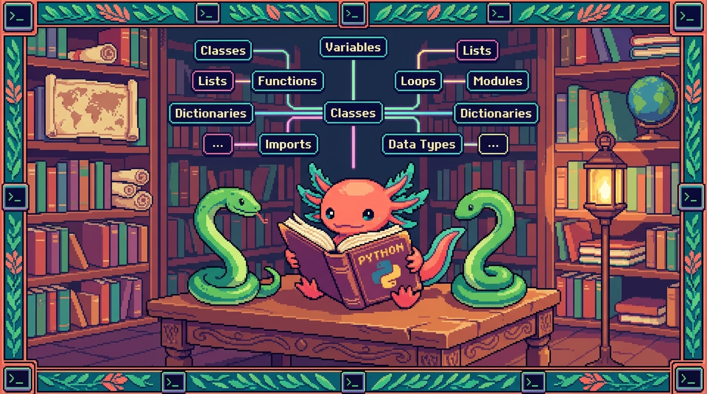

Capitulo 15 — Glosario de Python y mapa

¡Hola de nuevo! Soy Bit, tu ajolote guia. Llegaste al final del modulo de Python, y eso merece una celebracion (imaginame moviendo mis branquias de la emocion). Este capitulo es distinto a los demas: no vamos a aprender nada nuevo, vamos a ordenar todo lo que ya sabes. Piensa en este capitulo como el cajon donde guardas las herramientas despues de un proyecto: cada termino tiene su sitio, su etiqueta y una nota de "para que sirve esto". Lo usaras como diccionario cuando se te olvide algo (y se te va a olvidar, a todos nos pasa, no pasa nada). Al final hay un mapa mental, un repaso y la puerta hacia el Modulo 05: TypeScript. Respira, agarra agua, y vamos.
1. Como usar este glosario
Cada termino esta en un recuadro azul que empieza con 🟦 ¿Que significa?. Dentro encontraras tres cosas: una definicion simple (1-2 lineas), para que sirve y donde aparece en un repo real. El repo estrella de este modulo es PolyPaw, una app para aprender idiomas hecha integramente en Python con el framework Flet y datos guardados en archivos JSON (main.py, database_manager.py, missions/*.json). Cuando algo se parezca a lo que viste en JavaScript (Modulo 03), te lo digo en una frase corta para que conectes ideas.
No tienes que leerlo de corrido. Salta al termino que necesites. Pero la primera vez, dale una pasada completa: vas a decir "ah, ya entiendo como encaja todo".
💡 Tip
Marca con un lapiz (o con un comentario
# revisar) los terminos que aun te suenan borrosos. Volver a un glosario tres veces es normal y sano.
2. Fundamentos del lenguaje
Empezamos por lo mas basico: las piezas con las que se construye cualquier programa en Python.
🟦 ¿Que significa? — Variable
Un nombre que guarda un valor para usarlo despues. Para que sirve: etiquetar datos (un texto, un numero) y reutilizarlos sin repetirlos. En PolyPaw:
idioma = "nahuatl"guarda el idioma que eligio el usuario para mostrarselo en pantalla.
nombre_usuario = "Edwar"
puntos = 0
puntos = puntos + 10 # ahora puntos vale 10
En JavaScript escribias let puntos = 0;. En Python no hay let ni ;: solo el nombre, el = y el valor.
🟦 ¿Que significa? — Tipo (de dato)
La clase de informacion que contiene un valor: texto, numero, verdadero/falso, lista, etc. Para que sirve: Python sabe que operaciones puede hacer segun el tipo (sumar numeros, unir textos). En PolyPaw: el puntaje es un tipo numero (
int), el idioma es un tipo texto (str).🟦 ¿Que significa? — str (cadena / string)
Un tipo de dato que representa texto, escrito entre comillas. Para que sirve: guardar palabras, frases, nombres de archivo. En PolyPaw:
"Buenos dias"es el texto de una leccion.🟦 ¿Que significa? — int (entero)
Un numero sin decimales. Para que sirve: contar cosas: puntos, intentos, indice de una mision. En PolyPaw:
vidas = 3.🟦 ¿Que significa? — float (decimal)
Un numero con punto decimal. Para que sirve: medir cosas que no son enteras, como un porcentaje de progreso. En PolyPaw:
progreso = 0.75(75% de la mision completada).🟦 ¿Que significa? — bool (booleano)
Un tipo que solo puede ser
TrueoFalse. Para que sirve: representar respuestas de si/no para tomar decisiones. En PolyPaw:mision_completada = True.⚠️ Cuidado
En Python se escriben con mayuscula inicial:
TrueyFalse. En JavaScript eratrueyfalseen minuscula. Es un error clasico al cambiar de lenguaje.🟦 ¿Que significa? — None
Un valor especial que significa "nada" o "sin valor todavia". Para que sirve: indicar que algo aun no tiene contenido. En PolyPaw: un usuario nuevo puede tener
ultima_leccion = Nonehasta que termine la primera. (En JavaScript esto eranull.)🟦 ¿Que significa? — Sangria (indentacion)
Los espacios al inicio de una linea que indican que ese codigo pertenece a un bloque. Para que sirve: en Python la sangria sustituye a las llaves
{}de JavaScript; define que esta dentro de unif, unforo una funcion. En PolyPaw: todo el cuerpo de una funcion va sangrado.
if puntos >= 100:
print("¡Subiste de nivel!") # esta linea pertenece al if por la sangria
⚠️ Cuidado
Usa siempre 4 espacios y no mezcles espacios con tabuladores. Una sangria inconsistente rompe el programa con un
IndentationError. Bit ha llorado lagrimas de ajolote por esto.🟦 ¿Que significa? — Comentario
Texto que Python ignora, escrito despues de
#. Para que sirve: explicarle a un humano (o a ti del futuro) que hace el codigo. En PolyPaw:# carga las misiones del idioma elegido.🟦 ¿Que significa? — Operador
Un simbolo que opera sobre valores:
+,-,*,/,==,and,or,not. Para que sirve: hacer cuentas y comparaciones. En PolyPaw:if vidas > 0 and not fin_del_juego:.🔎 En tu codigo
En PolyPaw, abre
main.pyy busca la primera linea sangrada despues de undef. Esa sangria es la frontera invisible que en JavaScript marcabas con{. Si la entiendes, entiendes la mitad de Python.
3. Colecciones: guardar muchos datos
Cuando necesitas guardar varios valores juntos, usas una coleccion. Python tiene cuatro principales.
🟦 ¿Que significa? — Lista (list)
Una coleccion ordenada de valores que puedes cambiar, escrita entre corchetes
[]. Para que sirve: guardar secuencias: las palabras de una leccion, los pasos de una mision. En PolyPaw:opciones = ["agua", "fuego", "tierra"]para una pregunta de opcion multiple.
misiones = ["saludos", "comida", "colores"]
misiones.append("animales") # agregar al final
primera = misiones[0] # acceder por posicion (empieza en 0)
Es practicamente el mismo concepto que el array de JavaScript.
🟦 ¿Que significa? — Tupla (tuple)
Una coleccion ordenada que no se puede cambiar, escrita entre parentesis
(). Para que sirve: guardar datos fijos que no deben modificarse, como una coordenada. En PolyPaw:tamano_ventana = (400, 800)(ancho y alto que no cambian).💡 Tip
¿Lista o tupla? Si los datos van a cambiar, usa lista. Si son fijos para siempre, usa tupla. La tupla ademas es un poquito mas rapida.
🟦 ¿Que significa? — Conjunto (set)
Una coleccion sin orden y sin duplicados, escrita entre llaves
{}. Para que sirve: guardar elementos unicos, como los idiomas que un usuario ya desbloqueo (sin repetir). En PolyPaw:idiomas_desbloqueados = {"nahuatl", "maya"}.🟦 ¿Que significa? — Diccionario (dict)
Una coleccion de pares clave: valor, escrita entre llaves
{}. Para que sirve: guardar datos etiquetados, como una ficha. En PolyPaw: cada mision es un diccionario:{"titulo": "Saludos", "nivel": 1, "completada": False}.
mision = {
"titulo": "Saludos",
"nivel": 1,
"completada": False
}
print(mision["titulo"]) # accedes por la clave, no por posicion
Es muy parecido al objeto literal de JavaScript ({ clave: valor }). El diccionario es el corazon de PolyPaw, porque cada archivo de missions/*.json se convierte en un diccionario al cargarlo.
🟦 ¿Que significa? — Clave (key)
El nombre con el que buscas un valor dentro de un diccionario. Para que sirve: etiquetar cada dato. En PolyPaw:
"titulo","nivel"y"completada"son las claves de una mision.🟦 ¿Que significa? — Indice (index)
El numero de posicion de un elemento en una lista o tupla, empezando en 0. Para que sirve: acceder a un elemento concreto. En PolyPaw:
opciones[0]es la primera opcion de respuesta.⚠️ Cuidado
El primer elemento es el indice
0, no el1. Si una lista tiene 3 elementos, los indices validos son 0, 1 y 2. Pediropciones[3]da un errorIndexError.
4. Control de flujo y bucles
Estas son las estructuras que deciden que se ejecuta y cuantas veces.
🟦 ¿Que significa? — Condicional (if / elif / else)
Una estructura que ejecuta codigo solo si se cumple una condicion. Para que sirve: tomar decisiones. En PolyPaw: mostrar "¡Correcto!" solo si la respuesta del usuario coincide con la esperada.
if respuesta == correcta:
print("¡Correcto!")
elif intentos > 0:
print("Intenta de nuevo")
else:
print("Sin intentos")
🟦 ¿Que significa? — Bucle for
Una estructura que repite codigo una vez por cada elemento de una coleccion. Para que sirve: recorrer listas y diccionarios. En PolyPaw: recorrer todas las misiones para mostrarlas en el menu.
for mision in misiones:
print(mision["titulo"])
🟦 ¿Que significa? — Bucle while
Una estructura que repite codigo mientras una condicion sea verdadera. Para que sirve: repetir sin saber cuantas veces de antemano. En PolyPaw: seguir pidiendo respuesta mientras al usuario le queden vidas.
⚠️ Cuidado
Si la condicion de un
whilenunca se vuelveFalse, el programa se queda atrapado para siempre (bucle infinito). Asegurate de que algo cambie dentro del bucle.
5. Funciones: empaquetar instrucciones
🟦 ¿Que significa? — Funcion
Un bloque de codigo con nombre que hace una tarea y puedes reutilizar. Se define con
def. Para que sirve: evitar repetir codigo y organizar el programa en piezas. En PolyPaw:cargar_misiones()lee los archivos JSON y devuelve las misiones.
def saludar(nombre):
return "Hola, " + nombre
mensaje = saludar("Bit")
En JavaScript escribias function saludar(nombre) { ... }. En Python es def y dos puntos, y el cuerpo va sangrado.
🟦 ¿Que significa? — Parametro
El nombre que aparece entre los parentesis al definir una funcion; es como una caja vacia que se llenara al llamarla. Para que sirve: que la funcion reciba datos. En PolyPaw: en
def cargar_idioma(codigo):,codigoes el parametro.🟦 ¿Que significa? — Argumento
El valor real que le pasas a una funcion al llamarla. Para que sirve: darle el dato concreto con el que trabajara. En PolyPaw: en
cargar_idioma("nahuatl"), el argumento es"nahuatl".💡 Tip
Parametro vs argumento: el parametro es la caja vacia (al definir); el argumento es lo que metes en la caja (al llamar). Misma caja, distinto momento.
🟦 ¿Que significa? — return
La palabra que devuelve un resultado desde una funcion hacia quien la llamo. Para que sirve: sacar el resultado del trabajo. En PolyPaw:
cargar_misiones()hacereturn misionespara entregar la lista.🟦 ¿Que significa? — print()
Una funcion incorporada que muestra texto en la consola. Para que sirve: ver valores y depurar. En PolyPaw: util durante el desarrollo para revisar que datos llegan antes de mostrarlos en la interfaz.
🟦 ¿Que significa? — f-string
Un texto que empieza con
fy permite insertar variables dentro con{}. Para que sirve: construir frases con datos sin pegar textos a mano. En PolyPaw:f"Nivel {nivel}: {titulo}".
nivel = 3
titulo = "Comida"
print(f"Nivel {nivel}: {titulo}") # Nivel 3: Comida
Es el equivalente a las template literals de JavaScript (`Nivel ${nivel}`), pero con f y llaves simples.
🟦 ¿Que significa? — Comprension (de lista)
Una forma corta de crear una lista en una sola linea recorriendo otra. Para que sirve: transformar o filtrar colecciones de manera compacta. En PolyPaw:
titulos = [m["titulo"] for m in misiones]saca solo los titulos.
numeros = [1, 2, 3, 4]
dobles = [n * 2 for n in numeros] # [2, 4, 6, 8]
💡 Tip
Una comprension es genial para tareas simples. Si necesitas mucha logica o condiciones complicadas, usa un
fornormal: se lee mejor.
6. Modulos, paquetes y entorno
Aqui esta lo que hace que Python sea tan potente: poder usar codigo de otros y organizar el tuyo.
🟦 ¿Que significa? — Modulo
Un archivo
.pycon codigo (funciones, variables) que puedes importar en otro. Para que sirve: dividir el programa en archivos con responsabilidades claras. En PolyPaw:database_manager.pyes un modulo que se encarga de leer y guardar datos.🟦 ¿Que significa? — import
La instruccion que trae a tu archivo el codigo de otro modulo o paquete. Para que sirve: reutilizar funciones sin reescribirlas. En PolyPaw:
main.pyhaceimport fletyimport database_manager.
import json
import database_manager
from missions import cargar_misiones
En JavaScript era import ... from "...". En Python es import o from ... import ..., sin llaves ni comillas en el nombre.
🟦 ¿Que significa? — Paquete
Una carpeta que agrupa varios modulos relacionados. Para que sirve: organizar proyectos grandes. En PolyPaw: la carpeta
missions/agrupa los datos y la logica de las misiones.🟦 ¿Que significa? — Biblioteca estandar
El conjunto de modulos que vienen incluidos con Python sin instalar nada. Para que sirve: tareas comunes ya resueltas (leer JSON, fechas, archivos). En PolyPaw: el modulo
json(de la biblioteca estandar) convierte los archivos.jsonen diccionarios.🟦 ¿Que significa? — pip
El instalador de paquetes de Python; descarga librerias de internet. Para que sirve: agregar herramientas que no vienen incluidas. En PolyPaw:
pip install fletinstala el framework de la interfaz.🟦 ¿Que significa? — PyPI
El gran almacen en linea de donde
pipdescarga los paquetes (Python Package Index). Para que sirve: es la fuente oficial de librerias. En PolyPaw: Flet vive en PyPI; de ahi lo bajapip. (Es el equivalente a npm en JavaScript.)🟦 ¿Que significa? — venv (entorno virtual)
Una "burbuja" aislada con su propia version de Python y sus paquetes, separada del sistema. Para que sirve: que cada proyecto tenga sus librerias sin chocar con otros. En PolyPaw: se crea con
python -m venv .venvpara instalar Flet solo ahi.
python -m venv .venv
source .venv/bin/activate # activarlo (Linux/Mac)
pip install flet
💡 Tip
El entorno virtual es como una
node_modulescon superpoderes: ademas de las librerias, aisla la version de Python. Crea uno por proyecto, siempre.🟦 ¿Que significa? — requirements.txt
Un archivo de texto que lista los paquetes que necesita el proyecto. Para que sirve: que otra persona instale todo de golpe con
pip install -r requirements.txt. En PolyPaw: ahi aparecefletcon su version. (Es el primo delpackage.json.)
7. Clases y objetos (programacion orientada a objetos)
🟦 ¿Que significa? — Clase
Un molde para crear objetos con datos y comportamientos propios. Se define con
class. Para que sirve: representar cosas del mundo real con estructura. En PolyPaw: una claseUsuarioque agrupa nombre, puntos e idioma.
class Usuario:
def __init__(self, nombre):
self.nombre = nombre
self.puntos = 0
def sumar_puntos(self, cantidad):
self.puntos = self.puntos + cantidad
🟦 ¿Que significa? — Objeto (instancia)
Una "cosa" concreta creada a partir de una clase. Para que sirve: tener ejemplares reales del molde. En PolyPaw:
u = Usuario("Edwar")crea un objeto usuario con sus propios puntos.🟦 ¿Que significa? — Atributo
Un dato guardado dentro de un objeto. Para que sirve: que cada objeto recuerde su estado. En PolyPaw:
u.nombreyu.puntosson atributos del usuario.🟦 ¿Que significa? — Metodo
Una funcion que pertenece a una clase y actua sobre el objeto. Para que sirve: darle comportamientos al objeto. En PolyPaw:
u.sumar_puntos(10)es un metodo.🟦 ¿Que significa? — self
La palabra que, dentro de una clase, se refiere al objeto concreto que esta usando el metodo. Para que sirve: acceder a los atributos de ese objeto en particular. En PolyPaw:
self.puntosson los puntos de ese usuario, no de otro.⚠️ Cuidado
selfdebe ser el primer parametro de todos los metodos de una clase, y se escribe explicitamente. En JavaScript esto erathisy aparecia solo; en Python tienes que ponerlo a mano. Olvidarlo es un error muy comun al empezar.🟦 ¿Que significa? — init (constructor)
Un metodo especial que se ejecuta al crear un objeto y prepara sus atributos iniciales. Para que sirve: dejar el objeto listo para usar. En PolyPaw:
__init__deUsuarioponepuntos = 0al nacer el usuario.
8. Errores y robustez
🟦 ¿Que significa? — Excepcion
Un error que ocurre mientras el programa corre y, si no se atiende, lo detiene. Para que sirve: avisarte de que algo salio mal (un archivo que no existe, una division por cero). En PolyPaw: si falta un archivo de
missions/, Python lanza una excepcionFileNotFoundError.🟦 ¿Que significa? — try / except
Una estructura para intentar codigo que podria fallar y reaccionar si falla, sin que el programa muera. Para que sirve: manejar errores con elegancia. En PolyPaw: intentar cargar un JSON y, si esta corrupto, mostrar un mensaje en vez de cerrar la app.
try:
datos = cargar_misiones("nahuatl")
except FileNotFoundError:
print("No encontre las misiones de ese idioma")
Es el primo del try/catch de JavaScript; aqui se llama try/except.
🟦 ¿Que significa? — Traceback
El reporte que Python imprime cuando un error no se atiende, mostrando donde ocurrio. Para que sirve: encontrar la linea exacta del problema. En PolyPaw: si
main.pyfalla, el traceback te dice el archivo y la linea culpable.💡 Tip
No le tengas miedo al traceback. Leelo de abajo hacia arriba: la ultima linea suele decir el tipo de error, y arriba esta el rastro de como se llego ahi.
9. Datos externos: JSON y Flet
🟦 ¿Que significa? — JSON
Un formato de texto para guardar datos estructurados (claves y valores), facil de leer por humanos y maquinas. Para que sirve: guardar y compartir informacion entre archivos o programas. En PolyPaw: cada archivo de
missions/*.jsonguarda una mision; el modulojsonlo convierte en un diccionario de Python.
import json
with open("missions/saludos.json") as archivo:
mision = json.load(archivo) # ahora mision es un diccionario
print(mision["titulo"])
💡 Tip
JSON y los diccionarios de Python se parecen muchisimo: ambos usan
clave: valor. Por esojson.load()te devuelve un diccionario casi sin esfuerzo. En JavaScript usabasJSON.parse(); aqui esjson.load()(de archivo) ojson.loads()(de texto).🟦 ¿Que significa? — Flet
Un framework de Python para crear interfaces graficas (botones, textos, pantallas) sin escribir HTML ni CSS. Para que sirve: construir apps con ventana y botones usando solo Python. En PolyPaw: toda la interfaz (menus, lecciones, botones de respuesta) esta hecha con Flet en
main.py.
import flet as ft
def main(page: ft.Page):
page.add(ft.Text("¡Bienvenido a PolyPaw!"))
ft.app(target=main)
🔎 En tu codigo
A diferencia de tunal-digital, que dibuja su interfaz con HTML, CSS y JavaScript en el navegador, o de RachaSimple y Faro, que usan React, PolyPaw arma toda su pantalla con codigo Python y Flet. Mismo objetivo (una interfaz bonita), distinto camino. Por eso PolyPaw es nuestro ejemplo estrella: te muestra que con Python puro se puede hacer una app completa.
🟦 ¿Que significa? — with (gestor de contexto)
Una estructura que abre un recurso (como un archivo) y lo cierra solo al terminar, aunque haya error. Para que sirve: manejar archivos de forma segura sin olvidar cerrarlos. En PolyPaw: se usa
with open(...)cada vez que se lee un JSON de misiones.
10. Mapa mental de Python
Aqui tienes todo el modulo de un vistazo. Leelo de arriba hacia abajo: cada rama agrupa terminos que ya definimos.
PYTHON (Modulo 04)
│
┌──────────────┬──────────────┼──────────────┬───────────────┐
│ │ │ │ │
FUNDAMENTOS COLECCIONES FLUJO FUNCIONES ESTRUCTURA
│ │ │ │ │
variable lista if/elif def modulo
tipo tupla else parametro paquete
str/int conjunto for argumento import
float/bool diccionario while return pip / PyPI
None clave condicion f-string venv
sangria indice comprension requirements
comentario
operador
│
┌───────────────┼────────────────┐
│ │ │
OBJETOS (POO) ERRORES DATOS / UI
│ │ │
class excepcion JSON
objeto try/except json.load
atributo traceback Flet
metodo with / open
self
__init__
│
┌───────┴────────┐
│ PolyPaw │
│ main.py │
│ database_ │
│ manager.py │
│ missions/*.json│
└─────────────────┘
💡 Tip
Imprime o copia este mapa. Cuando estes programando y no recuerdes "¿como recorria una lista?", localiza la rama (FLUJO → for) y vuelve a la seccion 4. El mapa es tu indice mental.
11. Repaso final del modulo
Hagamos memoria juntos de lo que construiste a lo largo del Modulo 04:
- Aprendiste a guardar datos en variables y a distinguir sus tipos (
str,int,float,bool,None). - Dominaste la sangria, que en Python reemplaza a las llaves de JavaScript.
- Usaste las cuatro colecciones: lista, tupla, conjunto y diccionario, y entendiste que el diccionario es la base de cada mision de PolyPaw.
- Tomaste decisiones con
if/elif/elsey repetiste conforywhile. - Creaste funciones con
def, distinguiste parametro de argumento y devolviste resultados conreturn. - Escribiste f-strings y comprensiones para hacer codigo mas limpio.
- Organizaste codigo en modulos y paquetes, instalaste librerias con pip y aislaste todo en un venv.
- Modelaste el mundo con clases y objetos, usando self y
__init__. - Manejaste errores con try/except y aprendiste a leer un traceback.
- Leiste datos en JSON y construiste una interfaz completa con Flet, igual que PolyPaw.
Si lees esta lista y la mayoria te suena familiar, estas listo para avanzar. Si algo te chirria, vuelve a su seccion del glosario. No hay prisa: Bit te espera en el agua.
🔎 En tu codigo
Como ultimo repaso, abre PolyPaw e intenta localizar un ejemplo de cada cosa de la lista de arriba. Encontraras
importarriba demain.py, diccionarios enmissions/*.json, una clase o funciones endatabase_manager.pyy componentes de Flet en la interfaz. Ver los terminos "en vivo" sella el aprendizaje.
12. Como seguir: hacia el Modulo 05 (TypeScript)
Hiciste algo grande: aprendiste un lenguaje completo y viste como se construye una app real (PolyPaw) de principio a fin con Python. Ahora, ¿hacia donde?
El Modulo 05 es TypeScript, y no es casualidad. En el Modulo 03 conociste JavaScript; TypeScript es JavaScript con tipos, es decir, le agrega esas etiquetas de tipo que en Python eran implicitas. Muchas ideas que aprendiste aqui se transfieren:
- Variables y tipos seran familiares; en TypeScript escribiras
let puntos: number = 0, declarando el tipo a proposito. - Las funciones, listas (arrays) y objetos (diccionarios) tienen equivalentes casi directos.
- La idea de organizar codigo en modulos con
importes practicamente igual.
Y lo mejor: vas a ver TypeScript en proyectos reales de este mismo manual. RachaSimple (React + TypeScript + Supabase) y Faro/Organizer (Next.js + React + TypeScript + Supabase + OpenAI) estan construidos con el. Despues de Python puro, daras el salto al mundo web moderno con tipos que te protegen de errores antes de ejecutar.
💡 Tip
Antes de empezar TypeScript, deja descansar lo aprendido un dia o dos. El cerebro consolida mejor con pausas. Cuando vuelvas, traeras Python bien asentado y veras TypeScript con ojos mas agudos.
Gracias por llegar hasta aqui. Fue un honor ser tu guia anfibia en Python. Nos vemos en el Modulo 05. — Bit 🐾
✅ Checklist — ¿ya domino esto?
- [ ] Explico que es una variable y nombro al menos cuatro tipos de dato.
- [ ] Entiendo que la sangria reemplaza a las llaves
{}y uso 4 espacios. - [ ] Distingo lista, tupla, conjunto y diccionario y se cuando usar cada uno.
- [ ] Diferencio parametro de argumento y se que hace return.
- [ ] Se que son las f-strings y una comprension de lista.
- [ ] Explico la diferencia entre modulo, paquete, pip y venv.
- [ ] Entiendo clase, objeto, atributo, metodo, self y init.
- [ ] Se manejar errores con try/except y leer un traceback.
- [ ] Explico que es JSON y como Flet crea la interfaz de PolyPaw.
- [ ] Puedo leer el mapa mental y ubicar cualquier termino en su rama.
🧪 Ejercicios
-
Glosario propio. Sin mirar este capitulo, escribe con tus palabras la definicion de estos cinco terminos: variable, diccionario, funcion, self y JSON. Luego comparalas con las del glosario y corrige lo que falte.
-
Caza de equivalencias. Para cada concepto de Python, escribe su equivalente en JavaScript: lista, diccionario, f-string,
import,try/except. (Pista: array, objeto, template literal...). -
💻 Identifica en PolyPaw. Abre los archivos de PolyPaw y localiza, anotando el nombre del archivo y la linea aproximada: un
import, un diccionario, una funciondefy un componente de Flet. -
💻 Mini-diccionario. Crea un archivo
usuario.pyy dentro un diccionariousuariocon las clavesnombre,idiomaypuntos. Imprimelo con una f-string que diga:"<nombre> aprende <idioma> con <puntos> puntos". -
💻 Lee un JSON. Crea un archivo
mision.jsoncon{"titulo": "Colores", "nivel": 2}. Desde unleer.py, usawith open(...)yjson.load()para cargarlo en un diccionario e imprime su titulo. Envuelvelo en untry/except FileNotFoundErrorque avise si el archivo no existe. -
Mapa a mano. Dibuja de memoria el mapa mental de la seccion 10 con solo las cinco ramas principales (Fundamentos, Colecciones, Flujo, Funciones, Estructura) y cuelga al menos dos terminos de cada una. Comparalo con el original.